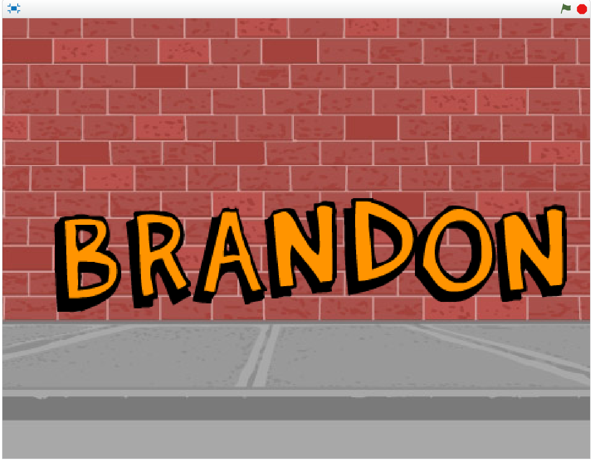
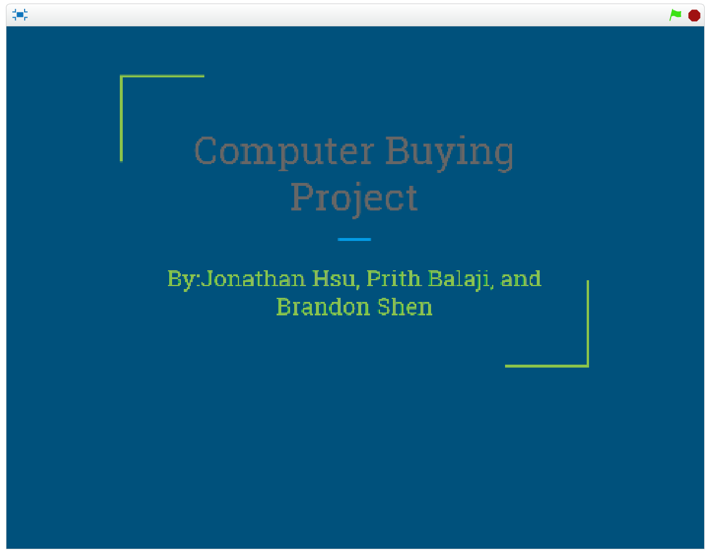
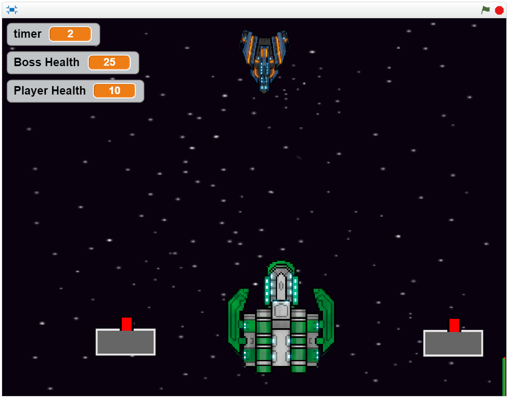

Scratch Content
Name Assignment

Description
Use scratch to design and create a program that shows my name. The requirements were to add a sprite for each letter in my name and give them 3 unique behaviors. The program needed to run when the green flag was clicked and for extra credit I added a function to reset the program when the green flash was clicked.
Concepts Learned
- Using event blocks
- Using movement blocks
- Using looks blocks
- Resetting when the green flag was clicked
- Used loops (forever block)
- Created and used sprites, and put scripts on sprites
Computer Buying Project

Description
Used scratch to present on what computer to buy on based on someone who we interview’s needs, and had to show why what computer was better and what each component of the computer did. We also presented it to the class after we were finished creating it.
- Learned about the parts of the computer
- Learned about what laptop is good for what
- Learned how to use costumes in scratch
- How to use backdrops in scratch
- How to use blocks to control the costume
- How to use user input
Final Project

Description
Had to use our scratch knowledge to make a game or story, and we had to present it to others for it to be peer graded. I made a game where you play as a spaceship and you have to dodge the bullets of an enemy spaceship and two turrets while shooting back. The goal is to kill the enemy before you die.
- Learned how to make create multiple projectiles out of one sprite (clones)
- Learned how to create collision in scratch
- Learned how to use variables
- Learned how to create my own blocks
- Learned how to use operator blocks
- Learned how to make a random number generator
- How to have the player move the character